GAMES202 — Real-Time High Quality Rendering Note1: Overview, Recap and Real-Time Shadows
GAMES202（闫令琪，UCSB）的笔记按大章节整理。这一篇对应 Lecture 1–4，加上 Lecture 5 开头的 distance field soft shadows。
1. 课程概览
1.1 什么是 Real-Time High Quality Rendering
- Real-Time：速度超过 30 FPS，VR/AR 需要 90 FPS；交互性，每帧实时生成
- High Quality：真实感，用高级方法让渲染更真实；可靠性，任何时候都正确 （精确或近似），不容忍不可控的失败
- Rendering：从 3D 场景（mesh、光源等）计算 light → eye 得到图像
课程是中级水平，连接基础知识和研究。最高层次分四块：
- Shadows（and environment lighting）
- Global illumination（scene / image space、precomputed）
- Physically-based shading
- Real-time ray tracing
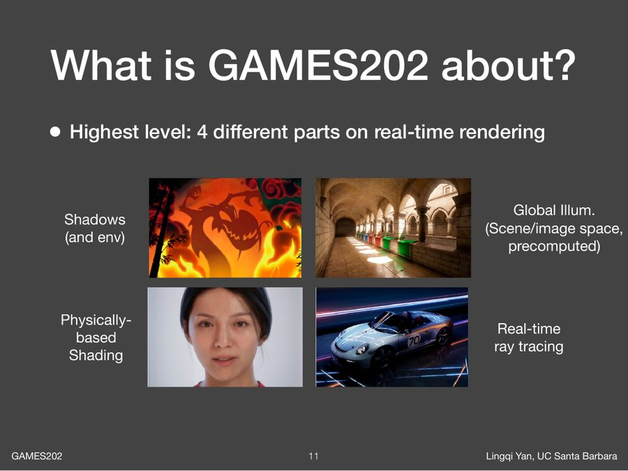
还会聊 participating media、image space effects、NPR、antialiasing 与 supersampling（TAA、DLSS）、以及技术和游戏本身。不讲：建模和引擎开发、电影里 昂贵的 light transport（MMLT、GDPT）、neural rendering（NeRF）、OpenGL 用法、 shader 优化和逆向、CUDA 等高性能计算。
1.2 怎么学
- Science ≠ technology：science 是知识，technology 是把知识变成产品的工程技能
- Real-time rendering = fast & approximate offline rendering + systematic engineering
- 事实：在实时渲染技术上，工业界远远领先学术界
- Practice makes perfect
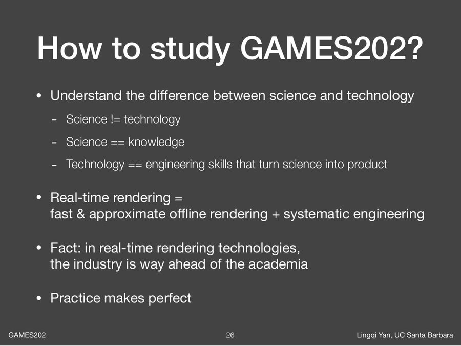
1.3 实时渲染的演化
图形学已经能生成照片级的图像，但精确算法（尤其光线追踪）很慢，叫 offline rendering。 用合适的近似可以生成足够可信的结果而且快得多（Final Fantasy XV 的实时渲染）。
- SGI 时代（Clark 82）到今天的交互式 3D 管线（OpenGL）：关注更多几何、纹理映射， 一些真实感小技巧（shadow mapping、accumulation buffer）
- 20 年前：简单纹理 + 假阴影（FF7、CS）
- 20 → 10 年前：可编程 shader（2000）带来巨大飞跃，复杂环境光、真实材质 （天鹅绒、绸缎、车漆）、软阴影（AC2、RE5）
- 今天："stunning graphics"（God of War）、VR、用引擎渲染动画剧集、UE4 的照片级 森林、NVIDIA 的实时光线追踪 demo（2018）
- 未来：The Matrix、Ready Player One
1.4 技术与算法里程碑
- 可编程图形硬件（shader，20 年前）：vertex shader 和 fragment shader 可编程
- 基于预计算的方法（15 年前）：复杂的视觉效果（部分）预先算好，运行时代价最小。 比如 relighting：固定几何、固定视点，动态改变光照
- 交互式光线追踪（8 到 10 年前，CUDA + OptiX）：硬件允许在 GPU 上以很低的采样率 （约 1 SPP）做光线追踪，再用后处理去噪
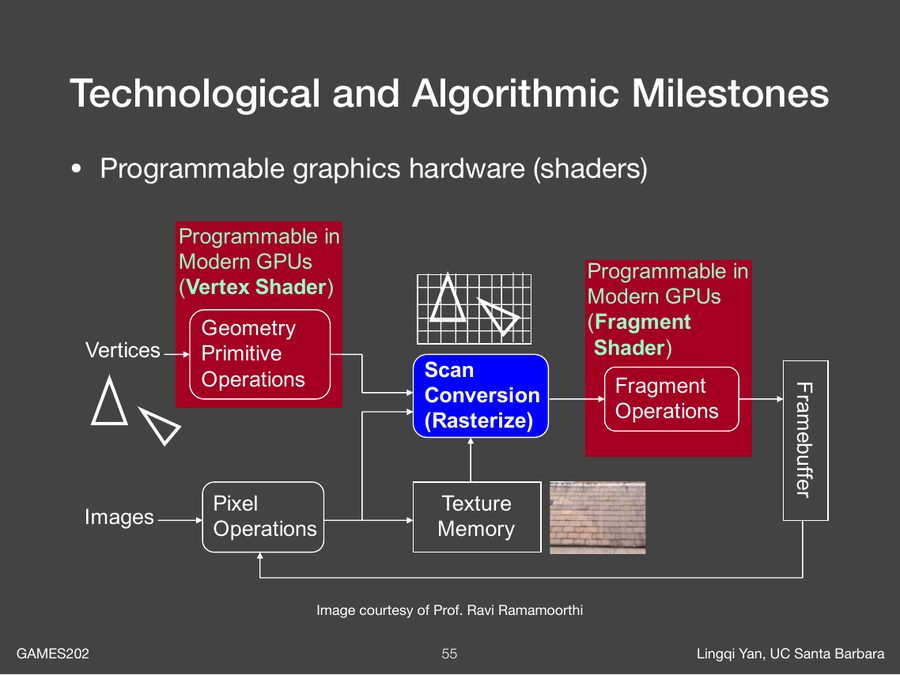
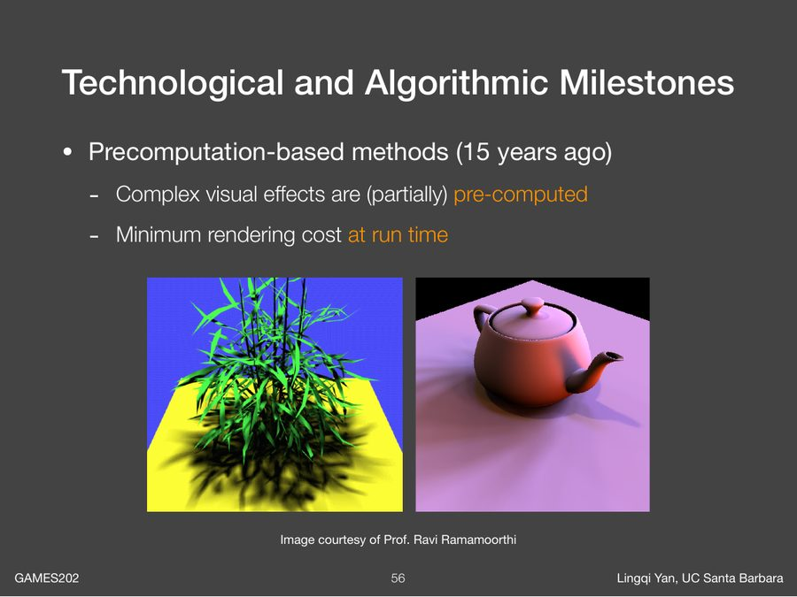
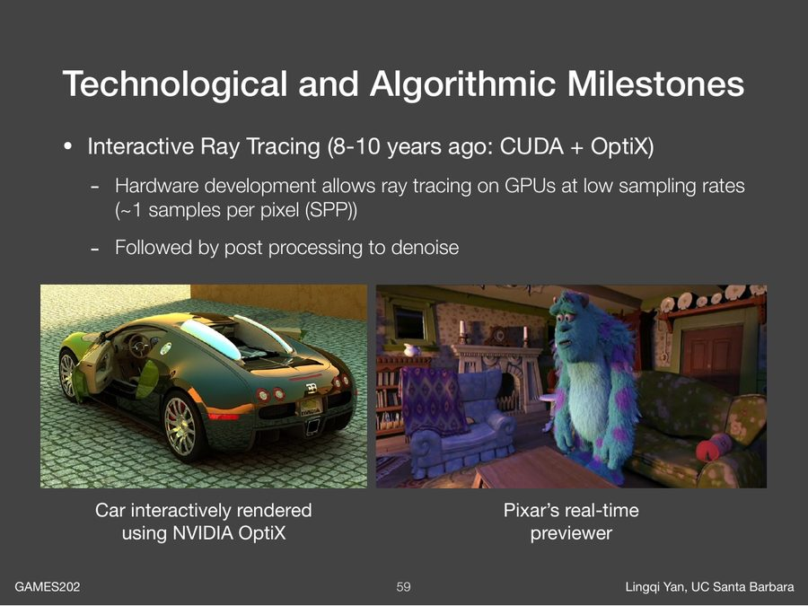
2. 图形学基础回顾
2.1 Graphics pipeline
Application → vertex processing（MVP）→ triangle processing → rasterization （采样三角形覆盖）→ fragment processing（z-buffer、shading、texture）→ framebuffer operations → display。详见 GAMES101 笔记。
2.2 OpenGL
OpenGL 是从 CPU 调用 GPU 管线的一套 API，所以语言无关，跨平台，替代品有 DirectX、 Vulkan。缺点：版本碎片化、C 风格不好用、不能调试（？）。理解方式：它和 GAMES101 里的 软件光栅器是一一对应的。
重要类比：油画。
- A. 摆放物体 / 模型（model specification + model transformation）：用户指定顶点、 法线、纹理坐标，作为 Vertex Buffer Object（VBO）发给 GPU，和 .obj 很像。变换矩阵 用 OpenGL 函数得到（glTranslate、glMultMatrix）
- B. 摆放画架（view transformation + framebuffer）：调 gluPerspective 之类设置相机
- C. 把画布装到画架上：OpenGL 的一个 rendering pass 指定一个 framebuffer， 指定一个或多个 texture 作为输出（shading、depth 等），然后渲染。同一个画架可以画多 幅画（multiple render targets）
- D. 在画布上作画：即 shading。对每个顶点并行调用 vertex shader（变换顶点等）； 对每个图元光栅化，每个覆盖的像素生成一个 fragment；对每个 fragment 并行调用 fragment shader（shading 和 lighting）；z-buffer 深度测试由 OpenGL 处理除非覆盖。 用户定义的 vertex / fragment shader 是我们最关心的"真正的动作"，其他操作大多 被封装了
- E. 换画布继续画
- F. 参考之前的画：multiple passes，前面 pass 的输出纹理作为后面 pass 的输入
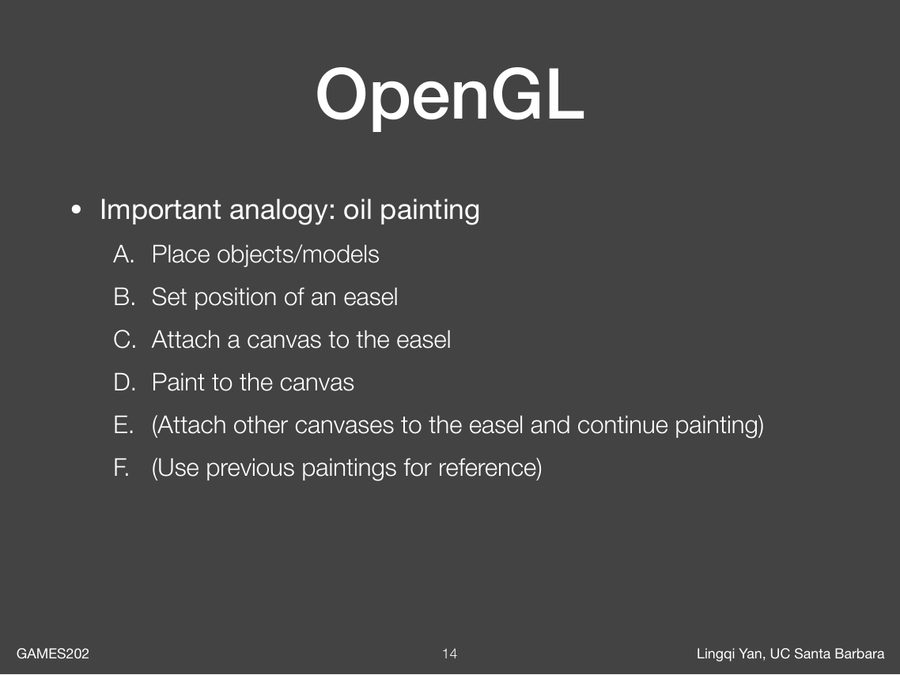
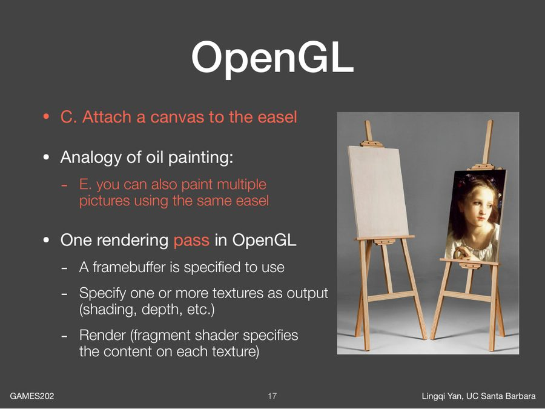
每个 pass 的总结：指定物体、相机、MVP；指定 framebuffer 和输入输出纹理；指定 vertex / fragment shader；都在 GPU 上准备好后，渲染。
2.3 Shading languages
Vertex / fragment shading 由类 C 的小程序描述。历史：Cook 的 Shade Trees、 RenderMan（离线）；远古时代在 GPU 上写汇编；Stanford RTSL；NVIDIA 的 Cg；DirectX 的 HLSL（vertex + pixel）；OpenGL 的 GLSL（vertex + fragment）。
Shader 设置：创建 shader（vertex 和 fragment）、编译、attach 到 program、link、use。 Shader 源码就是一串字符串。
调试：以前要 NVIDIA Nsight + Visual Studio，多块 GPU；现在有 Nsight Graphics （跨平台，仅 NVIDIA）和 RenderDoc（跨平台，不限 GPU），但不确定能否用于 WebGL。 个人建议：print it out，把值显示成颜色。
2.4 The rendering equation in RTR
实时渲染里的写法有两点不同：可见性 V 显式地写出来；BRDF 常和 cosine 项一起 考虑：
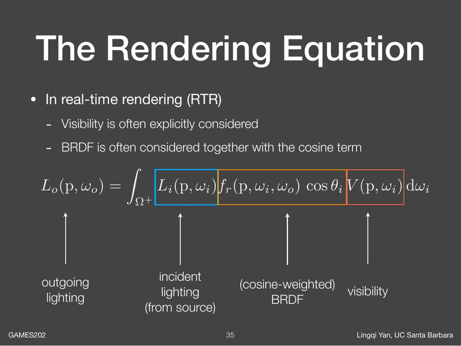
Environment lighting：表示来自所有方向的入射光，通常用 cube map 或 sphere map （纹理），课程会介绍新的表示（SH）。全局光照：direct → one-bounce → two-bounce…… 实时渲染里通常"一次弹射的间接光"就够了。
3. Shadow mapping 回顾与问题
Shadow mapping 是两 pass 算法：light pass 生成 shadow map（从光源看的深度图）， camera pass 使用它（把相机看到的点投影回光源比较深度）。它是 image-space 算法， 优点是不需要场景几何，缺点是自遮挡和走样。早期离线渲染（Toy Story）也用它。
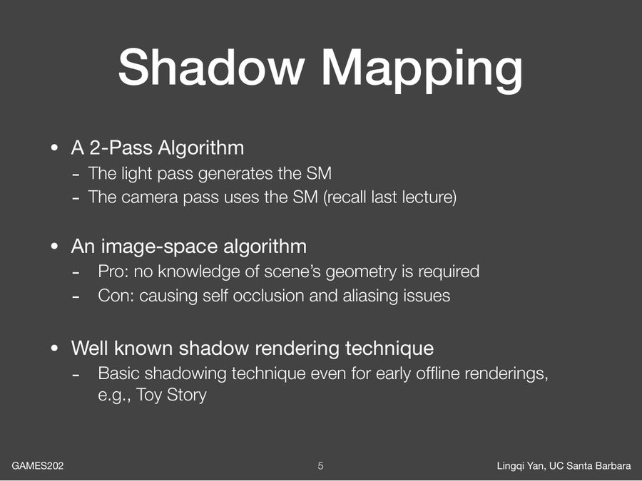
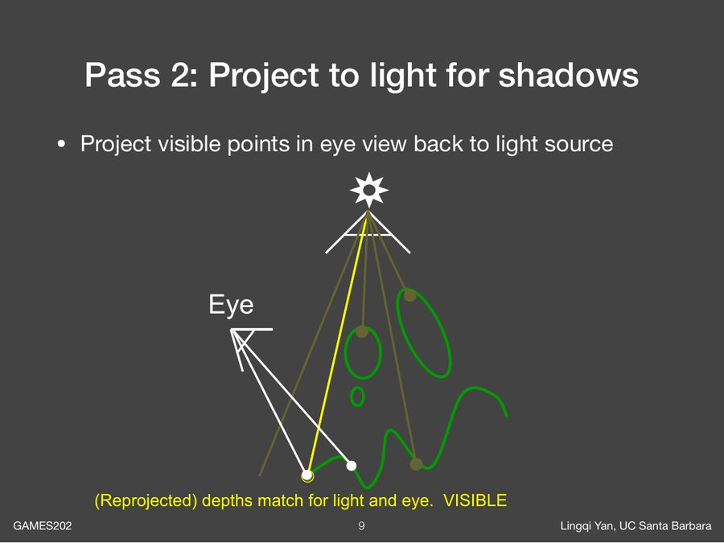
注意两个现象：高光永远不会出现在阴影里；曲面之间会互相投影。
3.1 Self occlusion
Shadow map 的每个 texel 记录的是一个离散的深度，代表一小块区域"平行于光源"的平面。 相机看到的点投影到某个 texel 时，它到光源的距离可能比记录的略大（因为在那个 texel 代表的小平面内有起伏），于是被判为在阴影里，产生摩尔纹状的自遮挡。光线掠射 （grazing angle）时最严重，因为一个 texel 覆盖的深度范围最大。
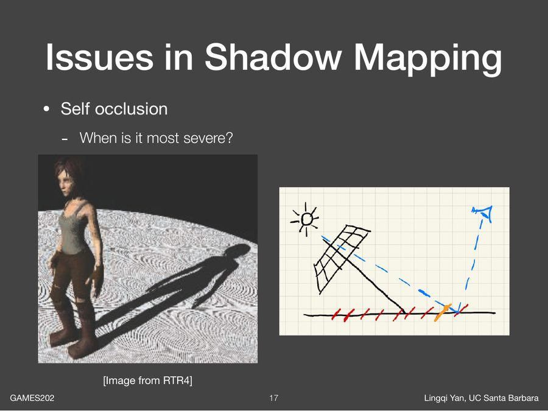
解法 1：加 bias。比较时给一个容差（可以随光线与法线夹角变化）。但会引入 detached shadow（peter panning）：阴影和物体脚下脱开。
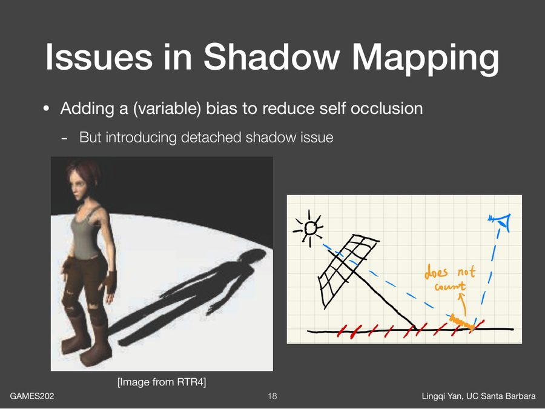
解法 2：second-depth shadow mapping。记录每个 texel 的最小和次小深度，用它们的 中点做比较。可惜要求物体 watertight，而且开销可能不值。RTR does not trust in COMPLEXITY：实时渲染宁可用简单的 hack 也不要复杂但只快 20% 的方法。
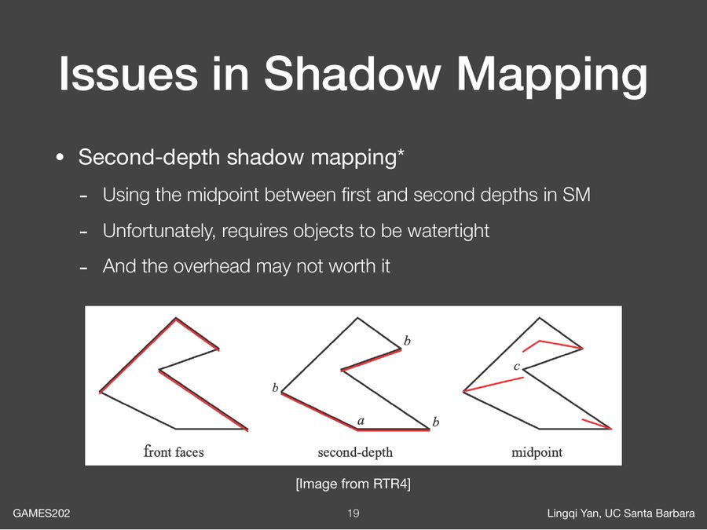
3.2 Aliasing
Shadow map 分辨率有限，投影到近处会看到锯齿。解决方案有 cascaded shadow maps、 动态分辨率等，本课不展开。
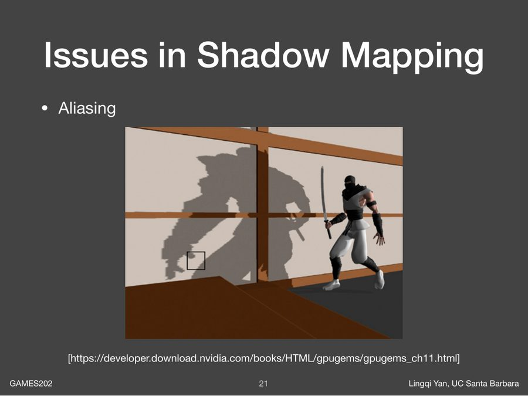
4. RTR 的核心近似
微积分里有很多不等式（Schwarz、Minkowski……），但 RTR 更关心"近似相等"。 贯穿整个课程的一个重要近似：
把 \(f\) 从积分里拿出来，换成它在积分域上的平均值。什么时候准确？
- 积分域 support 小（点光源、方向光）
- \(g\) 光滑（diffuse BRDF、radiance 恒定的面光源）
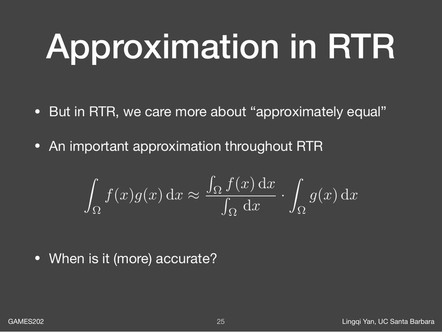
用在 shadow mapping 上，把可见性拿出来：
前一项就是"这个点有多少被照到"，后一项是没有阴影的 shading。这正是 shadow mapping 在做的事，也解释了它什么时候是对的。后面 ambient occlusion 等地方还会再见到它。
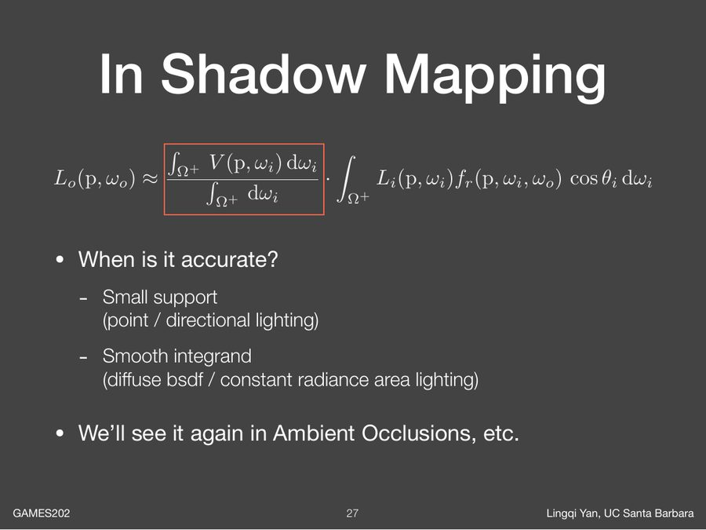
5. PCF 与 PCSS
5.1 从硬阴影到软阴影
真实阴影有本影（umbra）和半影（penumbra），来自有面积的光源。
5.2 Percentage Closer Filtering（PCF）
PCF 本来是给阴影边缘做反走样的（不是软阴影，软阴影是后面的 PCSS）。做法是 对深度比较的结果做滤波。为什么不直接滤波 shadow map？纹理滤波只是平均颜色分量， 得到的是模糊的 shadow map；把深度平均之后再比较，得到的仍然是二值的可见性。
算法（Reeves, SIGGRAPH 87）：对每个 fragment 做多次（比如 7×7）深度比较，然后平均 比较的结果。对地面上的点 P：
- 把它的深度和 shadow map 上一个区域（比如 3×3）的所有 texel 比较
- 得到比较结果，比如 1, 0, 1 / 1, 0, 1 / 1, 1, 0
- 取平均得到可见性 0.667
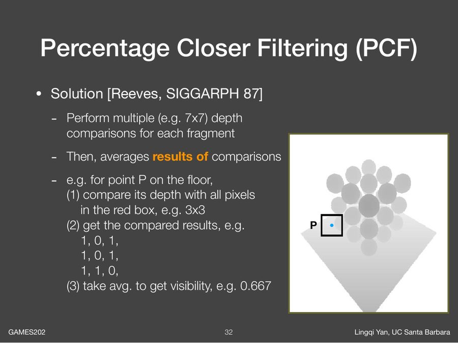
滤波的大小重要吗？ 小则锐利，大则柔和。能不能用 PCF 做软阴影？关键问题：正确 的滤波尺寸是多少？是均匀的吗？
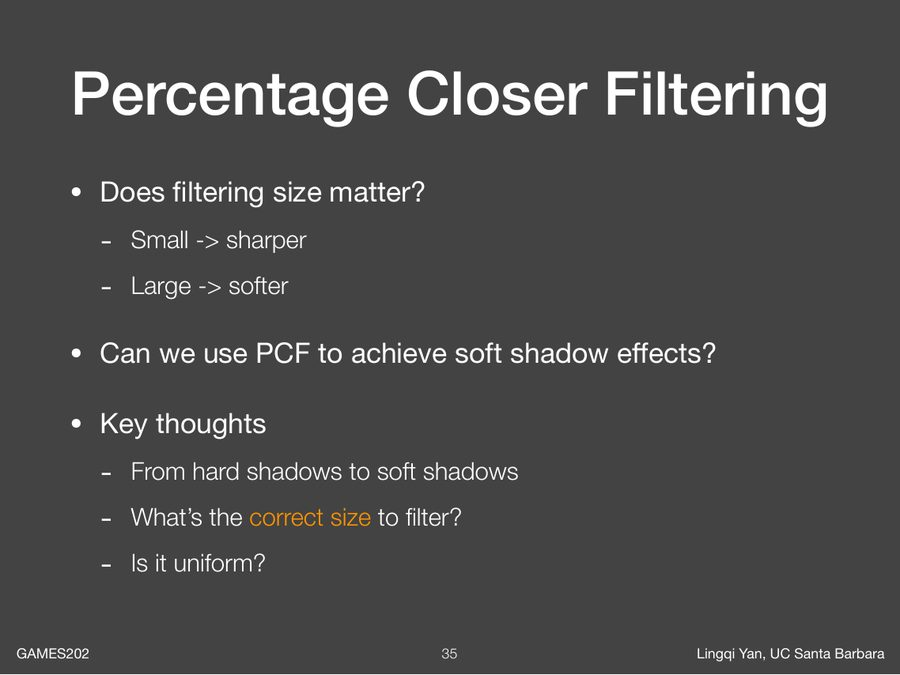
5.3 Percentage Closer Soft Shadows（PCSS）
关键观察（Fernando et al.）：笔的影子在靠近笔尖（接触地面）处锐利，远离处柔和。 滤波尺寸 ↔ 遮挡物的距离，更准确地说是相对的平均投影遮挡物深度。
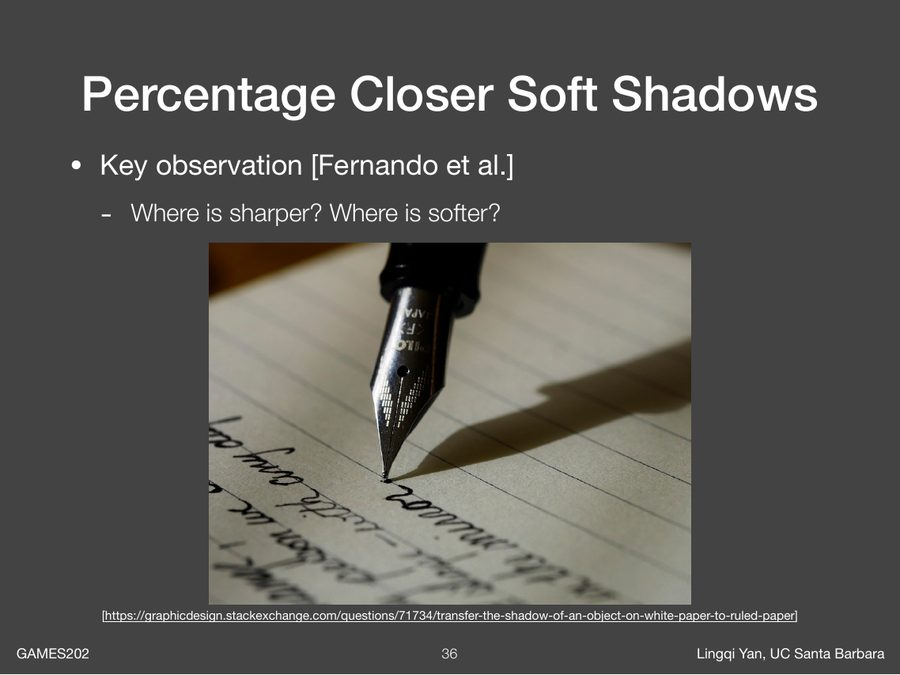
数学"翻译"：由相似三角形，
\(w_{light}\) 是光源大小，\(d_{receiver}\) 是接收点到光源的距离，\(d_{blocker}\) 是遮挡物 到光源的距离。
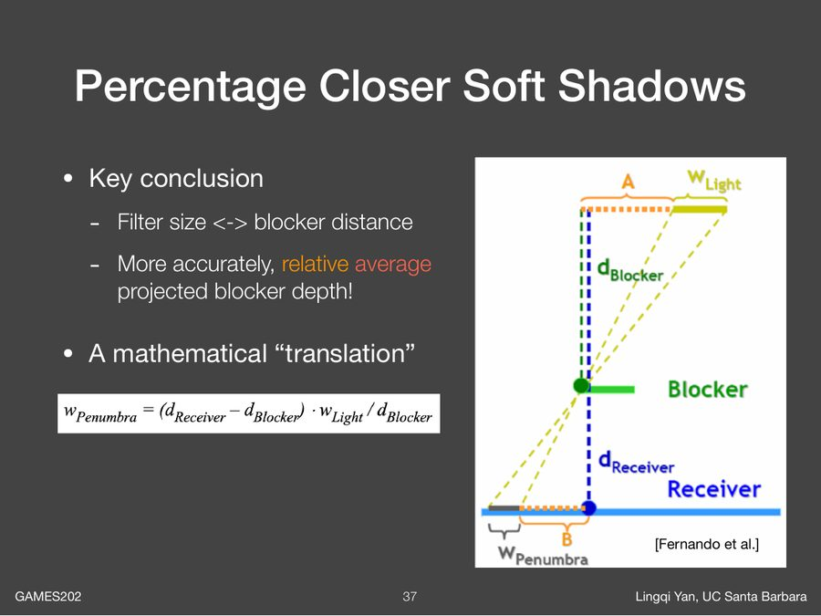
现在唯一的问题是 \(d_{blocker}\) 怎么来。完整的 PCSS：
- Blocker search：在 shadow map 的某个区域里求平均遮挡物深度（只算比 shading point 近的 texel）
- Penumbra estimation：用平均遮挡物深度确定滤波尺寸
- Percentage closer filtering
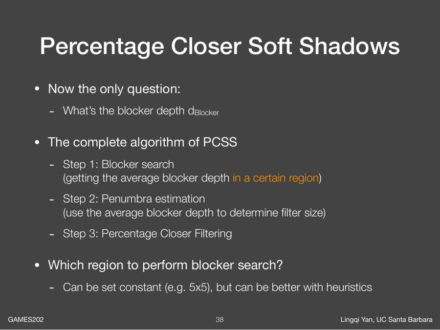
Blocker search 用哪个区域？ 可以设常数（比如 5×5），但更好的做法是取决于光源 大小和接收点到光源的距离：把 shadow map 放在近平面上，从 shading point 连向 光源的锥体在 shadow map 上的覆盖范围就是搜索区域。
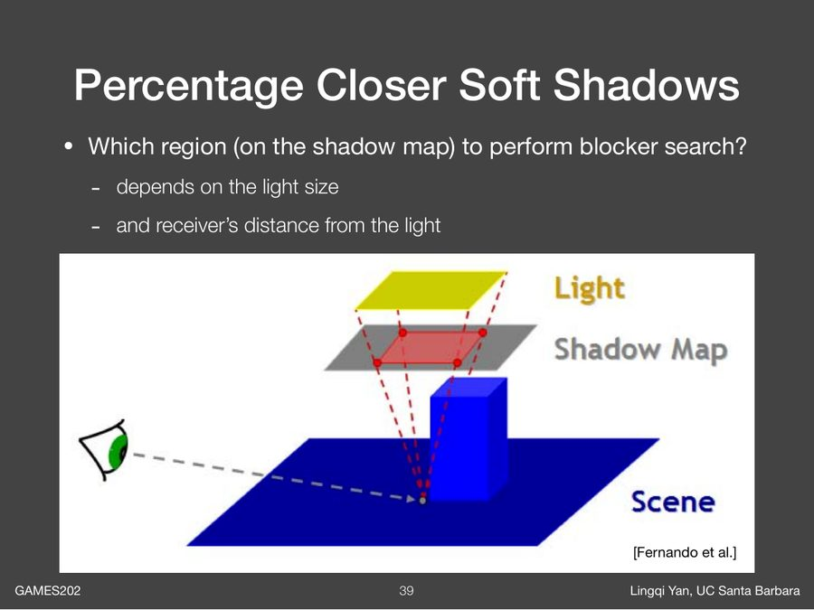
5.4 PCF 的数学
滤波 / 卷积：\([w * f](p) = \sum_{q \in N(p)} w(p, q) f(q)\)。PCSS 里：
\(\chi^+\) 是符号函数（正为 1，否则 0）。所以 PCF 不是先滤波 shadow map 再比较 \(V(x) \ne \chi^+\{[w * D_{SM}](q) - D_{scene}(x)\}\)，也不是对二值可见性的结果图 滤波 \(V(x) \ne \sum w(p, q) V(q)\)。
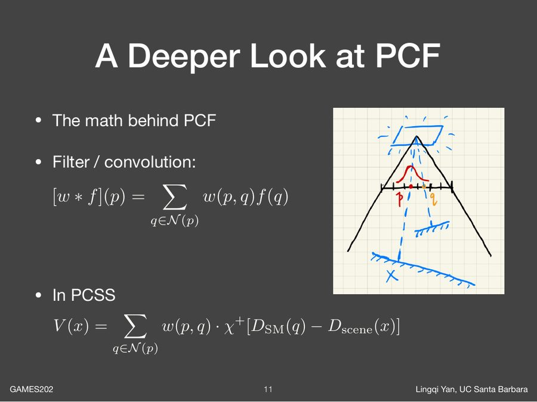
哪些步骤慢？ Step 1 和 3 都要看区域内每个 texel，越软区域越大越慢。
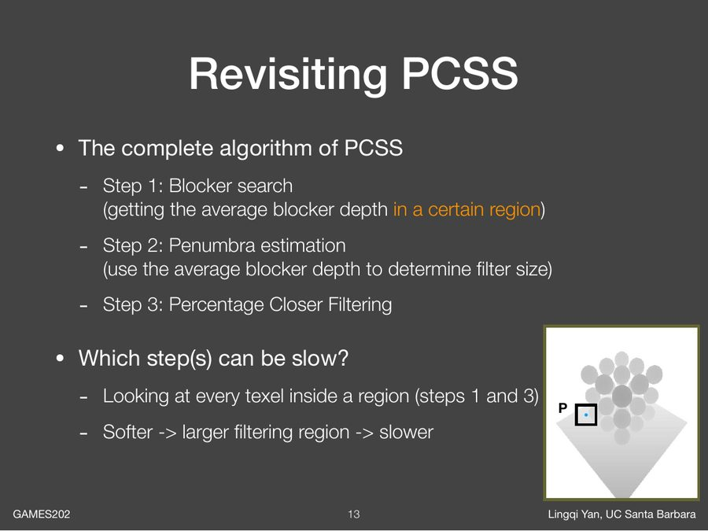
6. Variance Soft Shadow Mapping（VSSM）
6.1 思路
目标：快速做 blocker search（step 1）和 filtering（step 3）。从"percentage closer" 出发：要的是搜索区域里比 t 近的 texel 的百分比，就像"考试里有多少人比你考得好"。 用直方图能得到准确答案；用正态分布得到近似答案。定义正态分布只需要均值和方差。
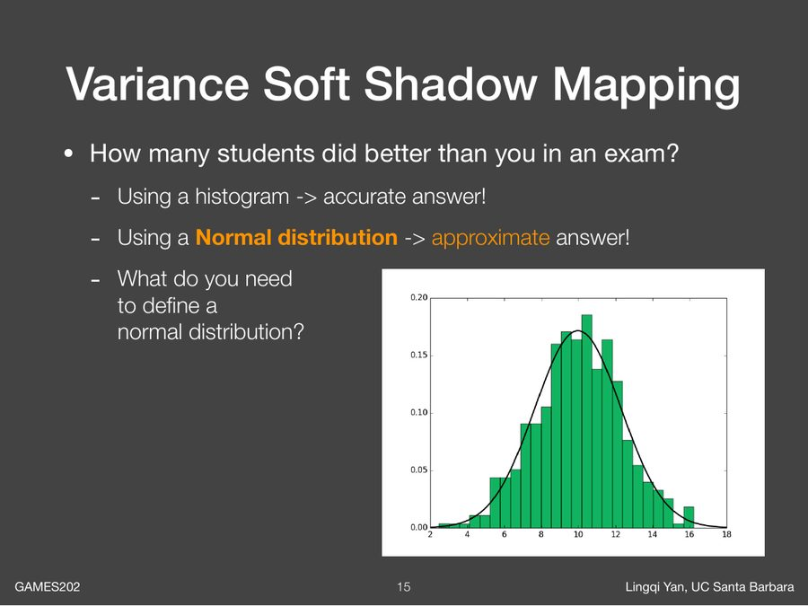
关键思想：快速算出一个区域内深度的均值和方差。
- 均值：硬件 MIPMAP 或 Summed Area Table（SAT）
- 方差：\(Var(X) = E(X^2) - E^2(X)\)，所以只需要 depth² 的均值，在生成 shadow map 时顺便生成一张 "square-depth map" 即可
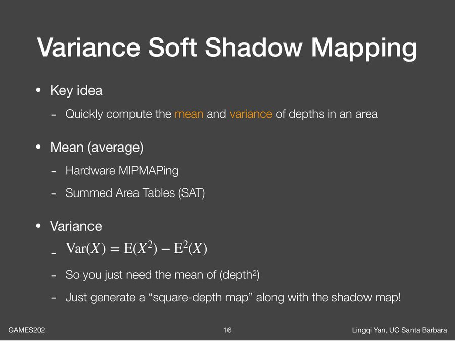
6.2 Chebychev 不等式
有了均值和方差，"比 t 近的百分比"就是 CDF，高斯的 CDF 是 erf，有准确答案但不好算。 不需要太准确：Chebychev's inequality（单边版本，\(t > \mu\)）：
甚至不假设是高斯分布。RTR 里直接把 ≤ 当 ≈ 用。
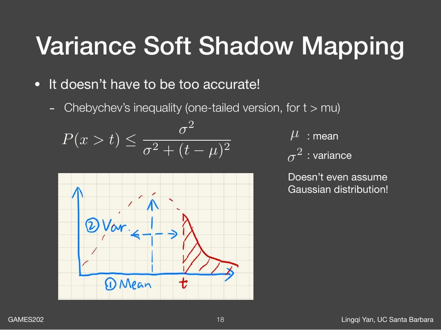
性能：生成 shadow map 时多一张 square depth map（并行，#pixels）；运行时区域内 深度均值 \(O(1)\)、深度平方均值 \(O(1)\)、Chebychev \(O(1)\)，不需要采样和循环。 Step 3 完美解决（？）。
6.3 用 VSSM 做 blocker search
Step 1 也需要循环。要的是遮挡物的平均深度，不是整个区域的平均深度 \(z_{avg}\)， 而是深度 \(z < t\) 的那些 texel 的平均。设遮挡物（\(z < t\)）的平均是 \(z_{occ}\)， 非遮挡物（\(z > t\)）的平均是 \(z_{unocc}\)，个数分别是 \(N_2, N_1\)：
近似：\(N_1 / N = P(x > t)\)（Chebychev），\(N_2 / N = 1 - P(x > t)\)；\(z_{unocc}\) 不知道，近似为 \(t\)（即假设阴影接收物是平面）。于是 \(z_{occ}\) 解出来了，step 1 以可忽略的额外代价解决。
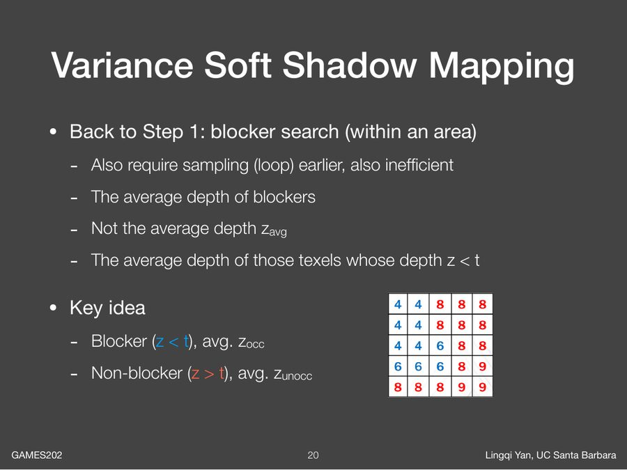
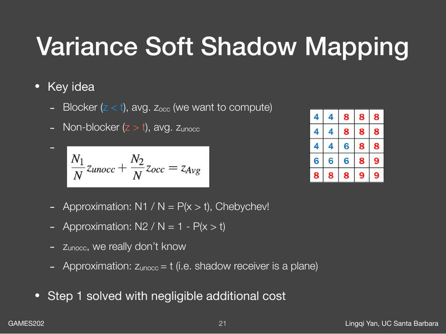
6.4 范围查询：MIPMAP 与 SAT
加速的关键是从任意矩形范围快速取 \(\mu\) 和 \(\sigma\)。均值是矩形范围查询：
- MIPMAP：即使用三线性插值也只是近似
- Summed Area Table（SAT）：经典的前缀和。1D 里 SAT[i] 是前 i 个元素之和，任意 区间和是两次查表相减；2D 里是四次查表。精确，但建表需要 \(O(n)\) 时间和存储 （存储通常不是问题；GPU 上可以用并行前缀和加速）
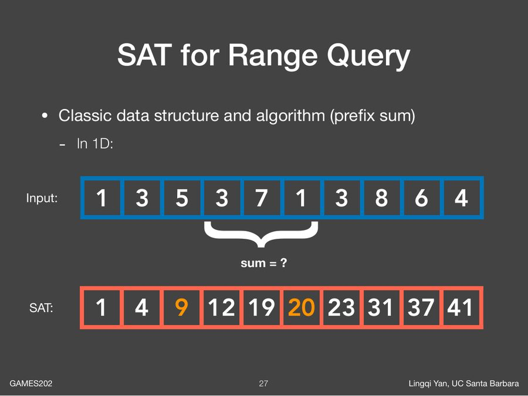
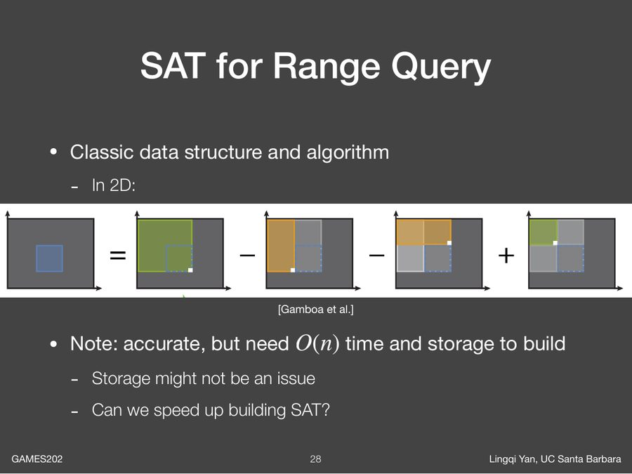
6.5 VSSM 的局限
正态分布总是足以近似深度分布吗？不。分布不准的后果：偏暗可能可以接受；偏亮 就是 light leaking（漏光，物体背面的地方本该全黑却亮了）。另外 Chebychev 只在 \(t > z_{avg}\) 时成立，以及 non-planarity artifact。
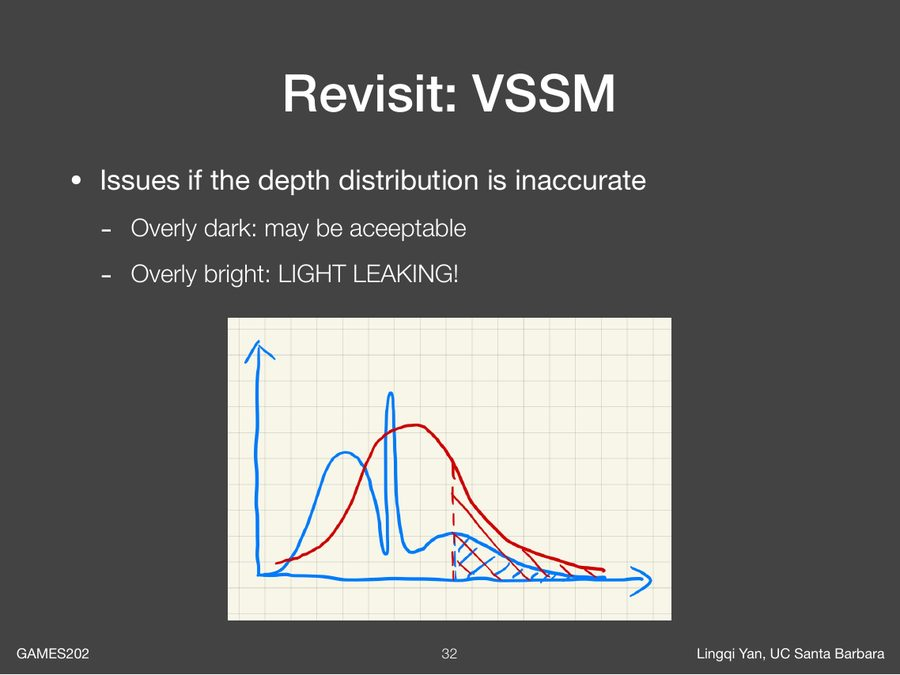
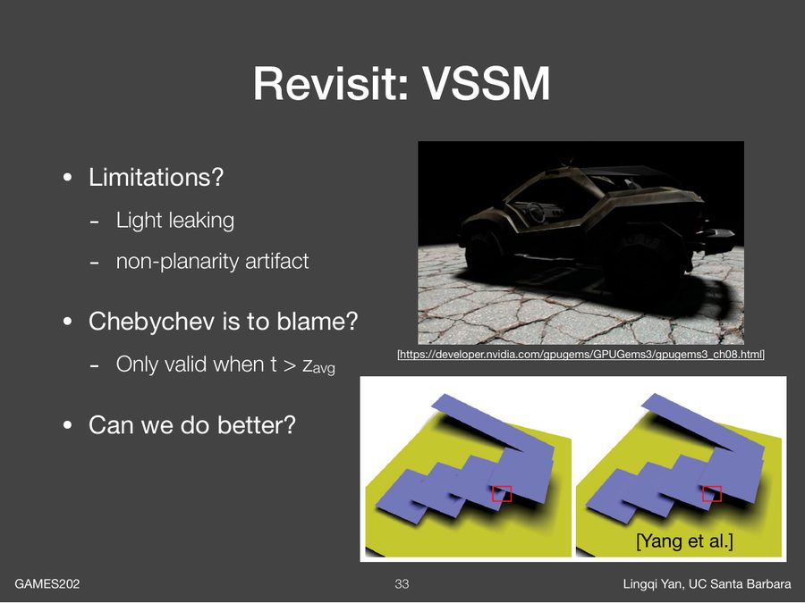
7. Moment Shadow Mapping（MSM）
目标：更准确地表示分布，但存储代价不要太高。思路：用更高阶的矩表示分布。最简单 的定义：\(x, x^2, x^3, x^4, \dots\)，VSSM 本质上用的是前两阶矩。
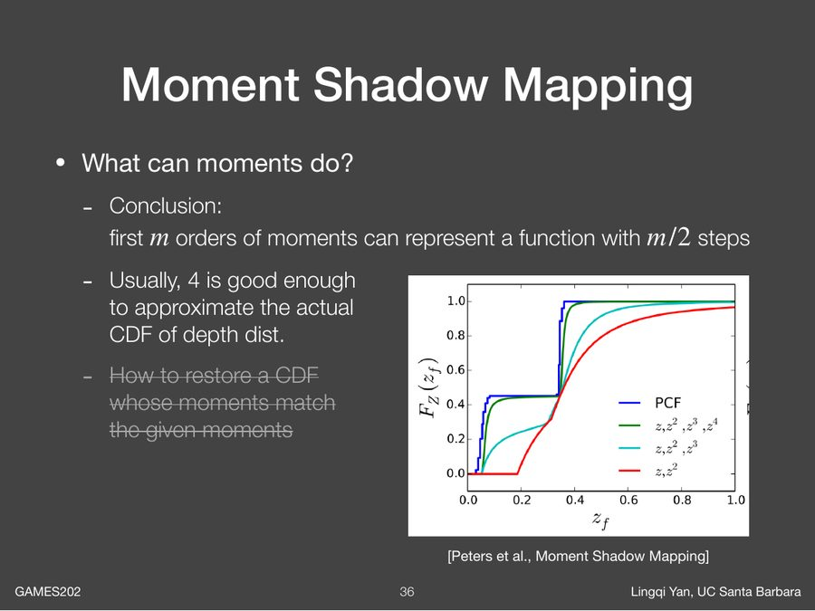
结论：前 m 阶矩可以表示一个有 m/2 个台阶的函数，通常 4 阶就足以近似真实的深度 CDF。MSM 和 VSSM 极其相似：生成 shadow map 时记录 \(z, z^2, z^3, z^4\)，在 blocker search 和 PCF 时恢复 CDF。优点：效果非常好。缺点：存储贵（可能还好），恢复 CDF 的性能开销贵。
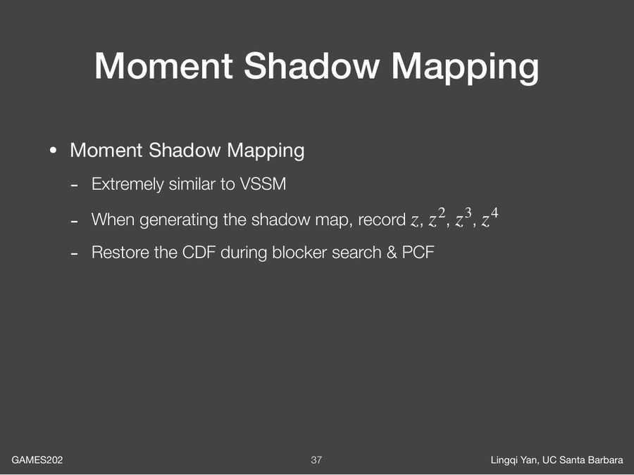
8. Distance Field Soft Shadows
8.1 距离场回顾
Distance function：任意一点给出到物体最近位置的最小距离（可以是有符号的，即 SDF）。两个 SDF 可以 blend（比如线性插值），对移动的边界做插值得到的是中间位置的 边界，而直接对图像插值只会得到两个半透明的叠加。
8.2 距离场的两个用途
用途 1：ray marching（sphere tracing）做光线与 SDF 求交。很聪明的想法： SDF 的值就是周围的"安全"距离，所以在点 p 每次可以放心地沿光线走 SDF(p) 这么远， 直到 SDF 足够小（到达表面）。
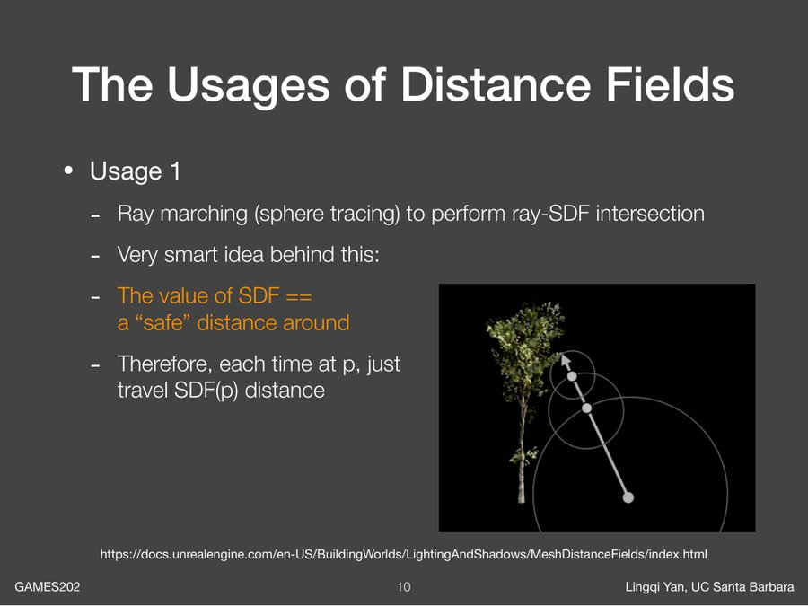
用途 2：用 SDF 决定（近似的）遮挡百分比。SDF 的值 → 从眼睛看出去的"安全角度"。 观察：安全角度越小，可见性越低。
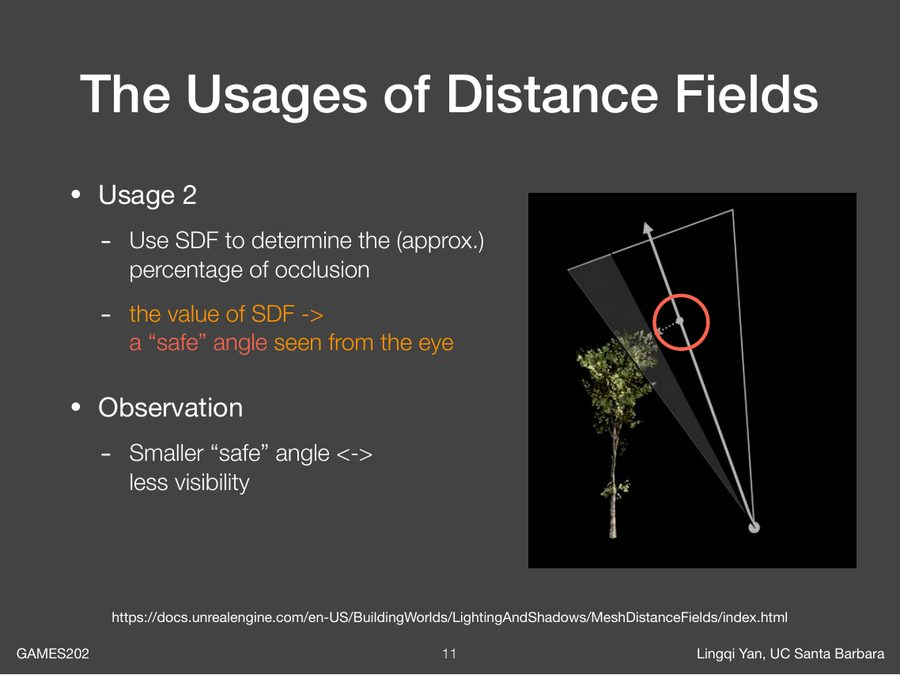
8.3 算法
从 shading point 向光源做 ray marching，在每一步计算从起点看的安全角度，保留最小 值作为可见性。角度怎么算？
工程上去掉 arcsin，直接用比值乘一个系数 \(k\)。\(k\) 越大，半影截断得越早，阴影越硬。
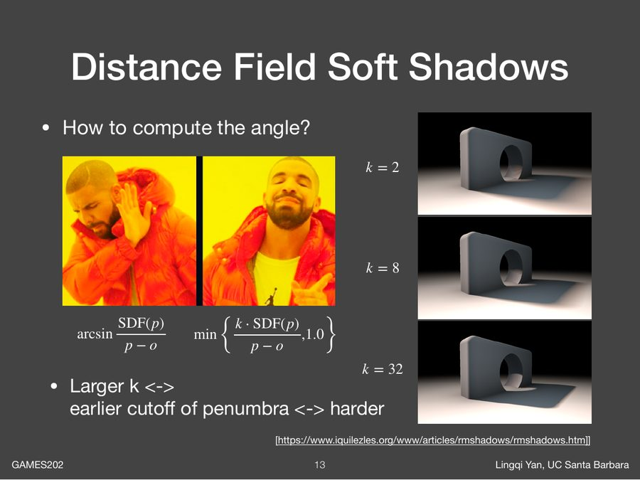
8.4 优缺点
- Pros：快（不用像 PCSS 那样遍历区域，但 ray marching 本身有代价）；高质量
- Cons：需要预计算；需要大量存储（3D 的距离场，可以用稀疏结构缓解）； 物体形变时要重算；有 artifact（比如在 UE 里的一些 hack）
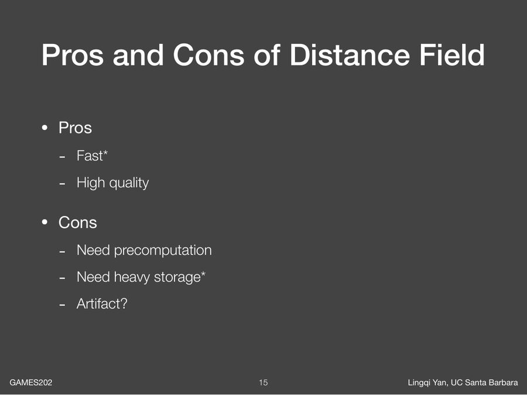
另一个有趣的应用：用 SDF 表示字体，可以做反走样、无限分辨率的文字渲染。
Comments